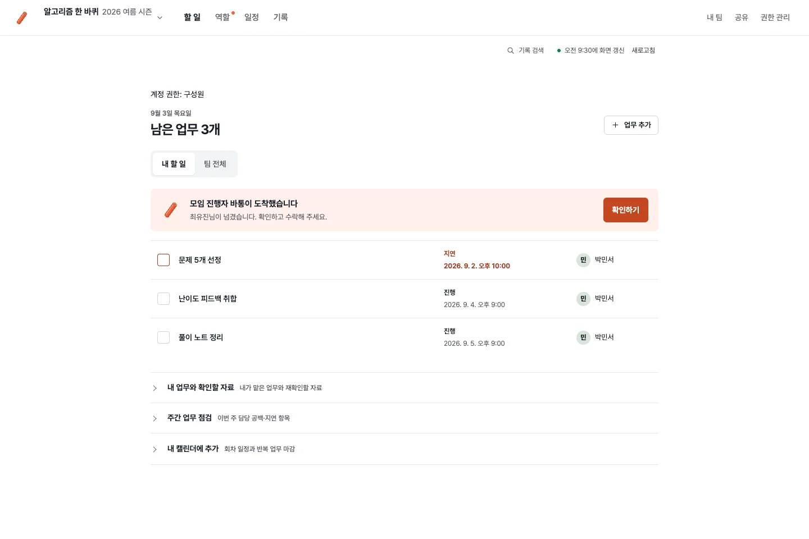
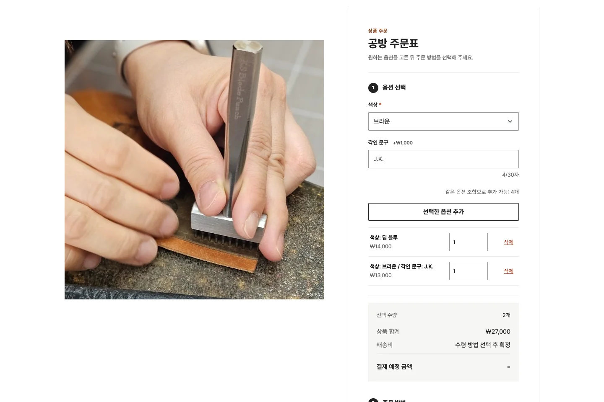
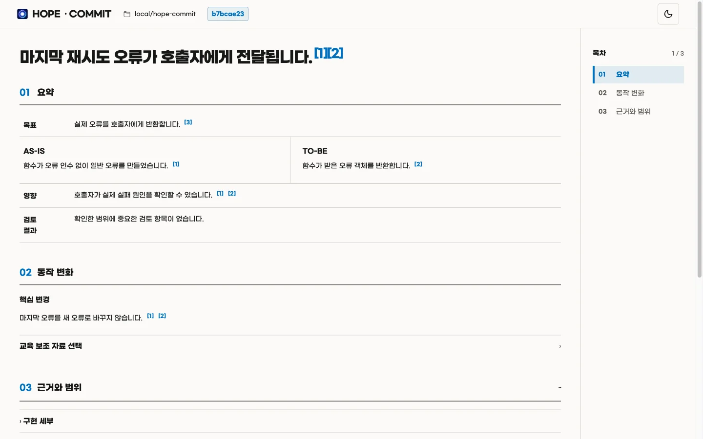

공공 SI에서 기관 연계 서버와 배치를 개발합니다. 개인 프로젝트에서는 결제·이벤트 중복 처리 방지와 중단 작업 재처리를 구현했습니다.
경력
-
전송형 전자영장 시스템 · BEINTECH
LG CNS 컨소시엄 참여, 5개 기관 연계. 기관별 요청 변환 및 제출 자료 반영 서버와 Spring Batch를 개발합니다.
-
차세대 군사법 정보 시스템 · BEINTECH
국방부 산하 4개 기관 연계. 기관 자료 검증 배치를 개발하고 중단된 배치만 재실행했습니다.
프로젝트
-

BATON
역할·반복 업무·인수인계 문서를 기록하는 Core와 6개 마이크로서비스. 요청 UUID와 이벤트 ID로 중복 생성을 막습니다.
-

happyGallery
상품 주문, 클래스 예약과 스마트스토어 운영. 결제·환불 키를 재사용하고 미전송 알림을 재처리합니다.
-

Hope Commit
SeungIl 님의 Hope 6.0.0을 포크해 로컬 커밋 HTML 리뷰를 추가했습니다. v5.0.2 공개, 자동화 테스트 343개 통과.